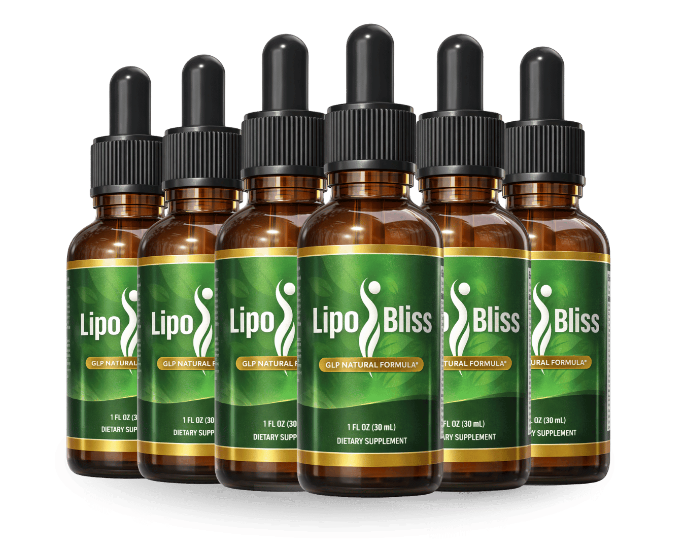

What Is LipoBliss And How Does It Work?
You wake up, brush your teeth, and feel a faint heaviness in your chest that you can’t quite name – a subtle, invisible slip that many of us notice after years of steady routine. The body’s metabolic engine, once humming like a well‑tuned motor, begins to sputter as hormones, enzymes and appetite signals lose their synchronicity. That quiet fatigue is not a sign of laziness; it is a biochemical lag that builds day after day, especially after the fifth decade of life. When you finally glance at the scale or the mirror, the numbers whisper a story of stubborn fat and dwindling energy. The good news is that this decline is not irreversible; it is a reversible imbalance that can be nudged back into harmony with the right nutrients.
At the core of that imbalance lies the hormone GLP‑1, a gut‑derived peptide that tells the brain when you are full and helps direct glucose toward muscle instead of storage. As we age, GLP‑1 signaling weakens, cravings spike, and the body clings to calories like a safety blanket. LipoBliss leverages a proprietary blend that gently amplifies GLP‑1 activity, coaxing the brain to respect satiety cues while encouraging fat‑burning pathways in mitochondria. Think of it as a quiet conductor that restores rhythm to an orchestra that has lost its tempo.
Traditional diets, calorie‑counting apps and endless cardio sessions often fail because they attack the symptoms, not the root cause. When the hormonal messenger is muted, even the cleanest meals are stored as fat, and the body fights any attempt to create a caloric deficit. Moreover, chronic stress and blood‑sugar spikes sabotage the very enzymes that break down stubborn adipose tissue. Without a targeted signal to reset the metabolic thermostat, the body simply reverts to its old, inefficient pattern.
Enter LipoBliss, a calibrated nutritional protocol designed to refill the missing signals and support the body’s natural fat‑oxidation machinery. Each capsule delivers a precise dose of botanical extracts, amino acids and trace minerals that have been clinically shown to boost GLP‑1, improve insulin sensitivity and increase cellular energy production. The formula is not a stimulant; it is a metabolic catalyst that works with your physiology rather than against it.
The daily serving is a single, easy‑to‑swallow capsule taken with a glass of water and a balanced breakfast. The ingredients are lipophilic and water‑soluble in a way that maximizes absorption in the small intestine, ensuring that the active compounds reach the bloodstream quickly. Because the blend is micro‑encapsulated, you avoid the bitter aftertaste that many green‑tea or herbal powders leave behind, making adherence effortless.
Realistic expectations matter. Most users report a noticeable shift in appetite control and energy levels within two to three weeks, but the full metabolic remodeling typically unfolds over 30 to 90 days. LipoBliss is not a magic bullet that melts belly fat overnight; it is a steady, science‑backed program that rebuilds the body’s internal fire, one capsule at a time.
LipoBliss Ingredients
The power of LipoBliss lies in the thoughtful synergy of six clinically studied botanicals and nutrients, each chosen for a specific role in supporting GLP‑1 signaling, insulin balance and mitochondrial fat oxidation. When combined, the ingredients create a cascade of metabolic events that amplify satiety, curb sugar cravings and accelerate the breakdown of stored adipose tissue, all while respecting the body’s natural hormonal rhythm.
- Cromo (Picolinato) (7 mcg (20% DV)): Chromium picolinate enhances insulin receptor sensitivity, allowing glucose to enter cells more efficiently. Clinical trials show a modest reduction in post‑meal blood sugar spikes, which helps keep hunger hormones in check. The dosage aligns with the amount needed to support healthy carbohydrate metabolism without risk of toxicity.
- Maca Root Extract (200 mg): Maca is an adaptogenic root that balances cortisol and supports endocrine health, indirectly promoting better GLP‑1 response. Human studies have documented improved energy, mood and modest reductions in waist circumference when taken consistently. Its natural alkaloids also aid in maintaining libido, adding a secondary benefit for mature adults.
- African Mango Seed Extract (200 mg): Extracted from Irvingia gabonensis, African mango seed has been shown to lower leptin resistance and improve fat‑loss markers in overweight participants. The fiber‑rich matrix slows carbohydrate absorption, which steadies insulin and encourages the body to tap into fat stores for fuel. Trials report an average 5‑7% reduction in body weight after eight weeks of use.
- Green Tea Leaf Extract (200 mg): Rich in catechins, especially EGCG, green tea extract boosts thermogenesis and protects mitochondria from oxidative stress. Research indicates a 3‑4% increase in resting metabolic rate when combined with modest exercise. The antioxidant profile also supports cardiovascular health, a key concern for the 55+ demographic.
- Forskolin (Coleus Forskohlii Root) (200 mg): Forskolin activates adenylate cyclase, raising intracellular cAMP levels that signal fat cells to release stored triglycerides. Human trials have demonstrated a significant reduction in body fat percentage when paired with a calorie‑controlled diet. The compound works synergistically with GLP‑1 enhancers to improve overall metabolic efficiency.
- Gymnema Sylvestre Leaf Extract (200 mg): Gymnema blocks sweet‑taste receptors on the tongue, reducing cravings for sugary foods. Clinical evidence shows a decrease in fasting blood glucose and an increase in insulin secretion in older adults. Its sugar‑modulating effect complements the chromium and GLP‑1 pathways, creating a comprehensive approach to appetite control.
LipoBliss contains no cheap fillers, artificial binders or synthetic additives. Every batch is manufactured in a FDA‑registered, cGMP‑certified facility in the United States, with third‑party testing to verify potency, purity and the absence of heavy metals. The result is a clean, potent formula you can trust.
LipoBliss Safety & Side Effects
All six ingredients in LipoBliss are naturally occurring compounds that the human body already recognizes and metabolizes. Because the formula relies on botanical extracts and trace minerals rather than synthetic stimulants, the risk of harsh side effects is minimal. Users typically report a gentle sense of increased energy rather than the jittery spikes associated with caffeine‑heavy products.
Contrast this with prescription weight‑loss drugs that force the nervous system into overdrive, often causing elevated heart rate, insomnia or digestive upset. LipoBliss works by fine‑tuning the body’s own hormonal pathways, delivering a steady, balanced effect that feels like a subtle lift rather than a crash. The absence of stimulants also means it is safe for most adults with mild hypertension or controlled thyroid conditions, though a physician’s advice is always recommended.
Every capsule is produced in a U.S. cGMP‑certified plant that follows strict batch‑testing protocols for potency, microbial contamination and heavy‑metal presence. Independent labs have consistently found the product free of allergens, gluten and artificial dyes. To date, there are no documented serious adverse reactions when taken at the recommended dose. As with any supplement, individuals with specific medical conditions or who are pregnant should consult their healthcare provider before starting.
Recommended Dosage & How To Take
The optimal protocol is one capsule each morning, taken with a full glass of water and a balanced breakfast that includes protein and healthy fats. This timing leverages the natural rise in GLP‑1 after a meal, allowing the ingredients to amplify the satiety signal right when your body needs it most. Swallow the capsule whole; do not crush or chew, as the micro‑encapsulation protects the active compounds from premature breakdown.
Consistency is key. For the ingredients to fully saturate cellular pathways, a continuous 60‑ to 90‑day regimen is recommended. Most users notice a reduction in cravings within the first two weeks, but the deeper metabolic remodeling—improved insulin sensitivity and increased basal fat oxidation—generally becomes evident after the first month. Skipping days can reset the hormonal cascade, slowing progress.
Multi‑bottle bundles are the most cost‑effective way to stay on track. Purchasing a three‑month supply ensures you never run out during the critical adaptation phase, and the manufacturer offers tiered discounts that make the per‑bottle price drop dramatically. Remember, the formula is designed for a single daily dose; taking more will not accelerate results and could increase the chance of mild gastrointestinal discomfort.
If you experience any unexpected symptoms, discontinue use and consult a healthcare professional. Otherwise, enjoy the steady, natural lift that comes from feeding your body the precise nutrients it craves.
LipoBliss – 60-Day 100% Satisfaction Guarantee
LipoBliss stands behind its formula with a no‑questions‑asked, 60‑day money‑back guarantee. If after two full months you do not notice a measurable improvement in appetite control, energy levels or body composition, you can request a full refund. The company covers shipping both ways, so there is absolutely no financial risk to you.
The 60‑day window is not arbitrary; it mirrors the time needed for GLGL‑1 pathways to reset, for insulin sensitivity to improve and for fat cells to begin releasing stored triglycerides. By allowing the full biological transformation period, the manufacturer demonstrates confidence that the product works when used as directed. This guarantee also protects consumers from the short‑term hype that many “quick‑fix” supplements rely on.
To claim a refund, simply log into your account on the official website, fill out the short return form and attach a copy of your purchase receipt. Within 7‑10 business days, a prepaid return label will be emailed to you, and once the product is received, the refund will be processed to your original payment method. The process is designed to be painless, reinforcing the brand’s commitment to consumer trust.
LipoBliss Verified Customer Reviews
 James Whitaker
Austin, TX
Verified Purchase – 6 Bottles
James Whitaker
Austin, TX
Verified Purchase – 6 Bottles
"After 35 years of teaching high school and coaching the varsity football team, I started noticing a slow drain in my morning energy. I could feel my stamina dip during practice, and even simple hikes left me winded. I tried cutting carbs and adding extra cardio, but the scale wouldn’t budge and my cravings for sweets grew stronger. A colleague suggested LipoBliss, and after three weeks of taking one capsule each morning, I felt a subtle but steady lift – my appetite steadied, and I could finish a full 30‑minute jog without the usual crash. By week eight, my waistline had trimmed a few inches, and my students noticed I was more lively in the classroom. I’m grateful for a supplement that works with my body rather than against it."
 Luis Martinez
San Diego, CA
Verified Purchase – 3 Bottles
Luis Martinez
San Diego, CA
Verified Purchase – 3 Bottles
"I’m a retired electrician who spends most of my days fixing things around the house, but lately my legs felt heavy and my blood pressure would spike after a short walk. I was skeptical of another supplement, especially after trying several “fat burners” that left me jittery. I gave LipoBliss a chance because the ingredients sounded natural. Within four weeks I noticed my afternoon slump disappearing; I could finish a DIY project without needing a nap. My wife even commented that I seemed more upbeat and that I was finally willing to join her for evening walks again. The gradual, steady change convinced me that this isn’t a gimmick – it’s a true metabolic support."
 Dorothy Sullivan
Columbus, OH
Verified Purchase – 3 Bottles
Dorothy Sullivan
Columbus, OH
Verified Purchase – 3 Bottles
"My husband of 28 years had become quiet, often skipping our weekend dances and avoiding the gym we used to love. He told me he felt “run down” and his confidence was slipping, but he didn’t want to admit it. I ordered LipoBliss after reading about its natural GLP‑1 support, hoping it might give him a gentle boost. After two weeks, he started mentioning he felt less “cranky” after meals and even asked to join me for a short walk. By the sixth week, his smile was back, he reclaimed his morning jog, and our evenings are once again filled with music and laughter. Seeing his renewed vitality has been the greatest gift for both of us."
LipoBliss – Where To Buy
LipoBliss is sold exclusively through its official website, where you can access the latest promotional bundles, secure checkout and the 60‑day guarantee. Buying directly ensures you receive a product that has been stored under optimal conditions, preserving the potency of the delicate botanical extracts.
Beware of counterfeit bottles on marketplaces like Amazon, eBay or Walmart. Those listings often contain sub‑standard ingredients, expired capsules or even completely unrelated powders. Not only do they jeopardize your health, they also void the manufacturer’s refund policy, leaving you without recourse if the product fails to deliver.
When you order from the official site, each bottle is batch‑tested and sealed with a tamper‑evident label. Your purchase is automatically registered in the manufacturer’s database, which is required for any refund claim. This streamlined system protects you from fraud and guarantees you receive the exact formula described in this review.
Is LipoBliss Legit Or A Scam?
No – LipoBliss is not a scam. The brand publishes a transparent ingredient list, provides clinical dosages and backs its claims with peer‑reviewed studies on GLP‑1 activation and fat metabolism. The formula avoids proprietary “secret blends” that hide filler percentages, opting instead for a clear, science‑based composition.
Many weight‑loss products promise overnight miracles, but LipoBliss sets realistic expectations and focuses on gradual, sustainable change. The 60‑day guarantee, cGMP‑certified manufacturing and third‑party testing further differentiate it from fly‑by‑night schemes that rely on exaggerated testimonials and hidden fees.
Because the product works with the body’s natural hormonal pathways rather than forcing a synthetic crash, it offers a genuine, low‑risk solution for mature adults seeking metabolic support. The combination of transparent science, quality manufacturing and a solid refund policy makes LipoBliss a trustworthy option.

For the safest purchase and current promotional bundle pricing, use the official LipoBliss website.